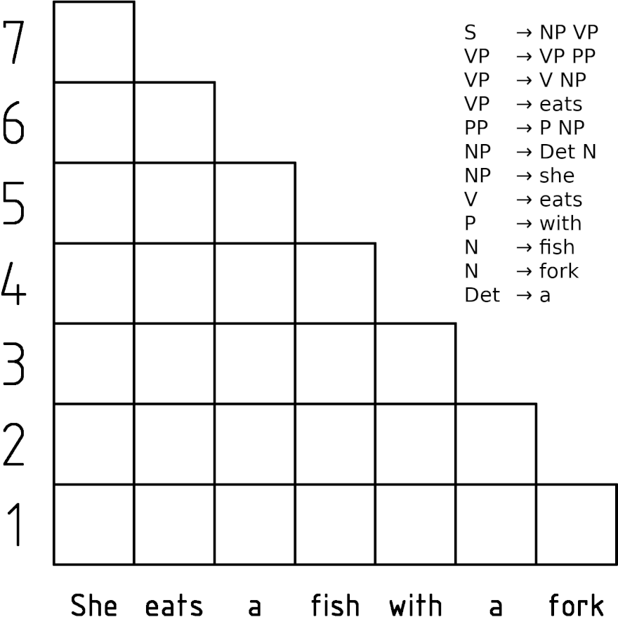
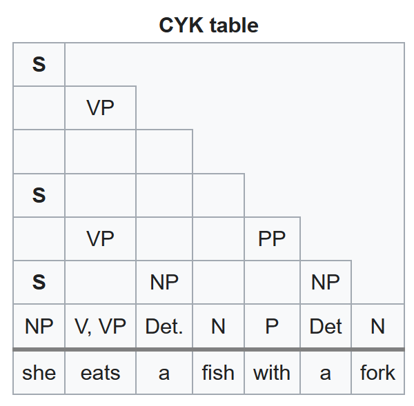

Chomsky Hierarchy, CFG, and CKY Algorithm
According to Wikipedia, this algorithm is a parsing algorithm for context-free grammars published by Itiroo Sakai in 1961. The algorithm is named after its rediscoverers. It employs bottom-up parsing and dynamic programming.
The standard version of the algorithm operates on context-free grammars given in chomsky normal form (CNF). However any context-free grammar may be alagorithmically transformed into a CNF grammar expressing the same language.
The Pseudo-code Goes As
let the input be a string I consisting of n characters: a1 ... an.
let the grammar contain r nonterminal symbols R1 ... Rr, with
start symbol R1.
let P[n,n,r] be an array of booleans. Initialize all elements of
P to false.
let back[n,n,r] be an array of lists of backpointing triples.
Initialize all elements of back to the empty list.
for each s = 1 to n
for each unit production Rv → as
set P[1,s,v] = true
for each l = 2 to n :-- Length of span
for each s = 1 to n-l+1 :-- Start of span
for each p = 1 to l-1 :-- Partition of span
for each production Ra → Rb Rc
if P[p,s,b] and P[l-p ,s+p ,c] then
set P[l,s,a] = true,
append <p,b,c> to back[l,s,a]
if P[n,1,1] is true then
I is member of language
return back :-- by retracing the steps through back,
one can easily construct all possible parse trees
of the string.
else
return "not a member of language"Here's a step-by-step breakdown of the pseudocode:
Initialization:
Initialize a boolean array
P[n,n,r]and a list arrayback[n,n,r].Set all elements of P to false.
Set all elements of back to empty lists.
Unit Productions:
For each position s in the string (from 1 to n):
For each unit production of the form
Rv → as:Set
P[1, s, v]to true.
Parsing:
For each length of span l (from 2 to n):
For each starting position s (from
1ton - l + 1):For each partition p of the span (from
1tol - 1):
For each production of the form Ra → Rb Rc:
If
P[p, s, b]andP[l - p, s + p, c]are both true:Set
P[l, s, a]to true.Append the triple
<p, b, c>to the list atback[l, s, a].
Result Check:
If
P[n, 1, 1]is true, then the input string is a member of the language.Return the back array, which contains information for constructing parse trees.
Result Reporting:
If the string is a member of the language, the algorithm returns the back array, allowing for the reconstruction of parse trees.
If the string is not a member of the language, a corresponding message is returned.
The CYK algorithm is a bottom-up parsing algorithm that can determine whether a given string belongs to a context-free language and construct parse trees for valid strings. The dynamic programming table (P) is used to store intermediate parsing results, and the back array is used for backtracking to construct parse trees.
Probabilistic CYK (for finding the most probable parse)
In informal terms, this algorithm considers every possible substring of the input string and sets P[l,s,v] to be true if the substring of length l starting from s can be generated from the nonterminal . Once it has considered substrings of length 1, it goes on to substrings of length 2, and so on.
For substrings of length 2 and greater, it considers every possible partition of the substring into two parts, and checks to see if there is some production such that B matches the first part and C matches the second part. If so, it records A as matching the whole substring.
Once this process is completed, the input string is generated by the grammar if the substring containing the entire input string is matched by the start symbol.

Now the sentence she eats a fish with a fork is analyzed using the CYK algorithm. In the following table, in P[i,j,k], i is the number of the row (starting at the bottom at 1), and j is the number of the column (starting at the left at 1).
S :-> NP VP; VP :-> VP PP
VP :-> V NP; VP :-> EATS
PP :-> P NP; NP :-> DET N
NP :-> SHE; V :-> EATS; P :-> WITH
N :-> FISH; N :-> FORK; DET :-> ANow the sentence she eats a fish with a fork is analyzed using the CYK algorithm. In the following table, in P[i,j,k], i is the number of the row (starting at the bottom at 1), and j is the number of the column (starting at the left at 1).

Dynamic Programming
It"s a very ubiquitous method of reducing the runtime algorithms by discovering solutions to subproblems along the way to the solution of the main problem; to optimally plan a multi-stage process
good for problems with overlapping subproblems
generally involves the caching of partial results in a table for later retrieval
many application (outside of NLP)
What are the subproblems for the parsing task?
A well-formed substring table is a data structure containing partial consitutency structures. It may be represented as either a chart or a graph.
Example
Put into a chart,
| The | Brown | Dog |
|---|---|---|
Numbers indicate order in which symbol was entered into table. Setting up the CKY algorithm
For an input of length=n, crate a matrix
(n + 1 x n + 1)indexed from 0 to n.Each cell in the matrix
[i,j]is the set of all categories of constituents spanning from positionitoj.The alforithm forces you to fill in the table in the most efficient way.
Process cells left to right (across columns), bottom to top (backwards across rows).
CKY Assumptions
Critical observation: any portion of the input string spanning i to j can be split at k, and structure can then be built using sub-solutions spanning i to k and sub-solutionts spanning k to j.
•0 The •1 Brown •2 Dog •3
K = 1: possible consitituents are
[0,1]and[1,3]K = 2: possible constituent are
[0,2]and[2,3]
Simple Grammar
S → NP VBZ; DT → the
S → NP VP; NN → chef
VP → VP PP; NNS → fish
VP → VBZ NP; NNS → chopsticks
VP → VBZ PP; VBP → fish
VP → VBZ NNS; VBZ → eats
VP → VBZ VP; IN → with
VP → VBP NP
VP → VBP PP
NP → DT NN
NP → DT NNS
PP → IN NP
•0 the •1 chef •2 eats •3 fish •4 with •5 the •6 chopsticks •7Let's Walk Through This In An Example
| 0 | 1 | 2 | 3 | 4 | 5 | 6 | 7 |
|---|---|---|---|---|---|---|---|
| 0 | |||||||
| 1 | |||||||
| 2 | |||||||
| 3 | |||||||
| 4 | |||||||
| 5 | |||||||
| 6 |
First we need to build a table; build an n + 1 x n + 1 matrix, where n = number of words in input
| 0 | the 1 | chef 2 | eats 3 | fish 4 | with 5 | the 6 | chopsticks7 |
|---|---|---|---|---|---|---|---|
| 0 | [0,1] | ||||||
| 1 | [1,2] | ||||||
| 2 | [2,3] | ||||||
| 3 | [3,4] | ||||||
| 4 | [4,5] | ||||||
| 5 | [5,6] | ||||||
| 6 | [6,7] |
Illustrate the numbering of cells: [i,j]s represent spans.
| 0 | the 1 | chef 2 | eats 3 | fish 4 | with 5 | the 6 | chopsticks7 |
|---|---|---|---|---|---|---|---|
| 0 | |||||||
| 1 | [1,2] | ||||||
| 2 | |||||||
| 3 | |||||||
| 4 | |||||||
| 5 | |||||||
| 6 |
Notice how the spans (e.g. [1,2]) differ from the word indices (e.g. "chef" , 2).
| 0 | the 1 | chef 2 | eats 3 | fish 4 | with 5 | the 6 | chopsticks7 |
|---|---|---|---|---|---|---|---|
| 0 | DT [0,1] | ||||||
| 1 | NN [1,2] | ||||||
| 2 | [2,3] | ||||||
| 3 | [3,4] | ||||||
| 4 | [4,5] | ||||||
| 5 | [5,6] | ||||||
| 6 | [6,7] |
"The" is labeled DT
| 0 | the 1 | chef 2 | eats 3 | fish 4 | with 5 | the 6 | chopsticks7 |
|---|---|---|---|---|---|---|---|
| 0 | DT [0,1] | ||||||
| 1 | NN [1,2] | ||||||
| 2 | [2,3] | ||||||
| 3 | [3,4] | ||||||
| 4 | [4,5] | ||||||
| 5 | [5,6] | ||||||
| 6 | [6,7] |
"chef" is labelled NN
| 0 | the 1 | chef 2 | eats 3 | fish 4 | with 5 | the 6 | chopsticks7 |
|---|---|---|---|---|---|---|---|
| 0 | DT [0,1] | NP [0,2] | |||||
| 1 | NN [1,2] | ||||||
| 2 | [2,3] | ||||||
| 3 | [3,4] | ||||||
| 4 | [4,5] | ||||||
| 5 | [5,6] | ||||||
| 6 | [6,7] |
Found an NP: [0,1] ,[1,2]
| 0 | the 1 | chef 2 | eats 3 | fish 4 | with 5 | the 6 | chopsticks7 |
|---|---|---|---|---|---|---|---|
| 0 | DT [0,1] | NP [0,2] | |||||
| 1 | NN [1,2] | ||||||
| 2 | VBZ [2,3] | ||||||
| 3 | [3,4] | ||||||
| 4 | [4,5] | ||||||
| 5 | [5,6] | ||||||
| 6 | [6,7] |
"eats" is labelled VBZ
| 0 | the1 | chef2 | eats3 | fish4 | with5 | the6 | chopsticks7 |
|---|---|---|---|---|---|---|---|
| 0 | DT [0,1] | NP [0,2] | S [0,3] | ||||
| 1 | NN [1,2] | ||||||
| 2 | VBZ [2,3] | ||||||
| 3 | [3,4] | ||||||
| 4 | [4,5] | ||||||
| 5 | [5,6] | ||||||
| 6 | [6,7] |
Found an S: [0,2] ,[2,3]
| 0 | the 1 | chef 2 | eats 3 | fish 4 | with 5 | the 6 | chopsticks7 |
|---|---|---|---|---|---|---|---|
| 0 | D T[0,1] | NP [0,2] | S [0,3] | ||||
| 1 | NN [1,2] | ||||||
| 2 | VBZ [2,3] | ||||||
| 3 | NNS[3,4] | ||||||
| 4 | [4,5] | ||||||
| 5 | [5,6] | ||||||
| 6 | [6,7] |
"fish" is lablled NNS
| 0 | the 1 | chef 2 | eats 3 | fish 4 | with 5 | the 6 | chopsticks7 |
|---|---|---|---|---|---|---|---|
| 0 | D T[0,1] | NP [0,2] | S [0,3] | ||||
| 1 | NN [1,2] | ||||||
| 2 | VBZ [2,3] | ||||||
| 3 | NNS, VBP[3,4] | ||||||
| 4 | [4,5] | ||||||
| 5 | [5,6] | ||||||
| 6 | [6,7] |
"fish" is also labelled VBP because of the verb "eats" or VBZ
| 0 | the 1 | chef 2 | eats 3 | fish 4 | with 5 | the 6 | chopsticks7 |
|---|---|---|---|---|---|---|---|
| 0 | D T[0,1] | NP [0,2] | S [0,3] | ||||
| 1 | NN [1,2] | ||||||
| 2 | VBZ [2,3] | VP[2,4] | |||||
| 3 | NNS, VBP[3,4] | ||||||
| 4 | [4,5] | ||||||
| 5 | [5,6] | ||||||
| 6 | [6,7] |
Found a VP
| 0 | the 1 | chef 2 | eats 3 | fish 4 | with 5 | the 6 | chopsticks7 |
|---|---|---|---|---|---|---|---|
| 0 | DT[0,1] | NP [0,2] | S [0,3] | S[0,4] | |||
| 1 | NN [1,2] | VP [2,4] | |||||
| 2 | VBZ [2,3] | ||||||
| 3 | NNS[3,4] | ||||||
| 4 | [4,5] | ||||||
| 5 | [5,6] | ||||||
| 6 | [6,7] |
Found an S: [0,2],[2,4]
| 0 | the 1 | chef 2 | eats 3 | fish 4 | with 5 | the 6 | chopsticks7 |
|---|---|---|---|---|---|---|---|
| 0 | DT [0,1] | NP [0,2] | S [0,3] | S[0,4] | |||
| 1 | NN [1,2] | ||||||
| 2 | VBZ [2,3] | ||||||
| 3 | NNS[3,4] | ||||||
| 4 | IN [4,5] | ||||||
| 5 | [5,6] | ||||||
| 6 | [6,7] |
"with" is labelled IN
| 0 | the1 | chef2 | eats3 | fish4 | with5 | the6 | chopsticks7 |
|---|---|---|---|---|---|---|---|
| 0 | [0,1] | NP [0,2] | S [0,3] | S[0,4] | |||
| 1 | NN [1,2] | ||||||
| 2 | VBZ [2,3] | ||||||
| 3 | NNS[3,4] | ||||||
| 4 | [4,5] | ||||||
| 5 | DT [5,6] | ||||||
| 6 | [6,7] |
"the" is labelled DT
| 0 | the1 | chef2 | eats3 | fish4 | with5 | the 6 | chopsticks7 |
|---|---|---|---|---|---|---|---|
| 0 | DT[0,1] | NP [0,2] | S [0,3] | S [0,4] | |||
| 1 | NN [1,2] | ||||||
| 2 | VBZ [2,3] | ||||||
| 3 | [3,4] | ||||||
| 4 | [4,5] | ||||||
| 5 | [5,6] | ||||||
| 6 | NNS[6,7] |
"chopsticks" is labelled NNS
| 0 | the1 | chef2 | eats3 | fish4 | with5 | the6 | chopsticks7 |
|---|---|---|---|---|---|---|---|
| 0 | DT[0,1] | NP [0,2] | S [0,3] | S [0,4] | |||
| 1 | NN [1,2] | ||||||
| 2 | VBZ [2,3] | ||||||
| 3 | [3,4] | ||||||
| 4 | [4,5] | ||||||
| 5 | DT[5,6] | NP[5,7] | |||||
| 6 | NNS[6,7] |
Found an NP: [5,6], [6,7]
| 0 | the 1 | chef 2 | eats 3 | fish 4 | with5 | the6 | chopsticks7 |
|---|---|---|---|---|---|---|---|
| 0 | DT[0,1] | NP [0,2] | S [0,3] | S [0,4] | |||
| 1 | NN [1,2] | ||||||
| 2 | VBZ [2,3] | ||||||
| 3 | [3,4] | ||||||
| 4 | IN [4,5] | PP [4,7] | |||||
| 5 | DT[5,6] | NP [5,7] | |||||
| 6 | NNS[6,7] |
Found a PP: [4,5], [5,7]
| 0 | the1 | chef2 | eats3 | fish4 | with5 | the6 | chopsticks7 |
|---|---|---|---|---|---|---|---|
| 0 | DT[0,1] | NP [0,2] | S [0,3] | S [0,4] | |||
| 1 | NN [1,2] | ||||||
| 2 | VBZ [2,3] | ||||||
| 3 | NNS,VPB[3,4] | VP [3,7] | |||||
| 4 | IN [4,5] | PP [4,7] | |||||
| 5 | DT[5,6] | NP [5,7] | |||||
| 6 | NNS[6,7] |
Found a VP: [3,4], [4,7]
| 0 | the1 | chef2 | eats3 | fish4 | with5 | the6 | chopsticks7 |
|---|---|---|---|---|---|---|---|
| 0 | DT[0,1] | NP [0,2] | S [0,3] | S [0,4] | |||
| 1 | NN [1,2] | ||||||
| 2 | VBZ [2,3] | VP [2,7] | |||||
| 3 | NNS, VPB[3,4] | VP [3,7] | |||||
| 4 | IN [4,5] | PP [4,7] | |||||
| 5 | DT[5,6] | NP [5,7] | |||||
| 6 | NNS[6,7] |
Found a VP:[2,3], [3,7]
| 0 | the1 | chef2 | eats3 | fish4 | with5 | the6 | chopsticks7 |
|---|---|---|---|---|---|---|---|
| 0 | DT[0,1] | NP [0,2] | S [0,3] | S [0,4] | |||
| 1 | NN [1,2] | ||||||
| 2 | VBZ [2,3] | VP [2,4] | , [2,7] | ||||
| 3 | NNS, VPB[3,4] | VP [3,7] | |||||
| 4 | IN [4,5] | PP [4,7] | |||||
| 5 | DT[5,6] | NP [5,7] | |||||
| 6 | NNS[6,7] |
Found another VP: [2,4], [4,7]
| 0 | the1 | chef2 | eats3 | fish4 | with5 | the6 | chopsticks7 |
|---|---|---|---|---|---|---|---|
| 0 | DT[0,1] | NP [0,2] | S [0,3] | S [0,4] | S [0,7] | ||
| 1 | NN [1,2] | ||||||
| 2 | VBZ [2,3] | VP [2,4] | [2,7], | ||||
| 3 | NNS, VPB[3,4] | VP [3,7] | |||||
| 4 | IN [4,5] | PP [4,7] | |||||
| 5 | DT[5,6] | NP [5,7] | |||||
| 6 | NNS[6,7] |
Found an S node: [0,2], [2,7] (where VP spans from [2,3], [3,7])
| 0 | the1 | chef2 | eats3 | fish4 | with5 | the6 | chopsticks7 |
|---|---|---|---|---|---|---|---|
| 0 | DT[0,1] | NP [0,2] | S [0,3] | S [0,4] | , [0,7] | ||
| 1 | NN [1,2] | ||||||
| 2 | VBZ [2,3] | VP [2,4] | [2,7], [2,7] | ||||
| 3 | NNS, VPB[3,4] | VP [3,7] | |||||
| 4 | IN [4,5] | PP [4,7] | |||||
| 5 | DT[5,6] | NP [5,7] | |||||
| 6 | NNS[6,7] |
Found a second S node also [0, 2], [2,7] (where VP spans from [2,4] , [4,7])
* Recognition algorithm returns `true` when a root node is found in `[0,n]`.Another Version of The CKY Algorithm Pseudo Code
CKY Recognition
Returning the full parse requires storing more in a cell than just a node label.
We also require back-pointers to constituents of that node.
We could also store whole trees, but less space efficient.
For parsing, we must add an extra step to the algorithm.
CKY Parsing
function CKY-Parse (words, grammar) returns parses
for j ← 1 to length(words) do: (loop over columns)
table[j-1,j] ← for all {A|A → words[j] ∈ grammar} (add all POS)
for i ← j-2 downto 0 do: (loop over rows, backwards)
for k ← i+1 to j-1 do: (loop over contents of cell)
for all {A|A → B C}: (all productions)
back[i,j,A] ← { k,B,C } (add back pointer)
return buildtree(back[1, length(words,S]), table[1,LENGTH(words),S])
(follow back pointer)Facts about CKY algo
The CKY can be performed in cubic time: , where n=number of words in sentence.
The complexity of the inner most loop is bounded by the square of the number of non-terminals.
The more rules, the less efficient; but this increases at a constant rate where r is the number of non-terminal.
The basic algoritm requires a binary grammar, in fact a grammar in Chomsky Normal Form.
Basic algorithm can be extended to account for arbitrary
CFGs.However, transforming a grammar into a
CNF grammaris easier and more efficient than parsing with an arbitrary grammar.Later, we’ll look at the
Earley Algorithmfor parsing arbitrary CFGs.
Chomsky Normal Form grammar
a context-free grammar where the
RHSof each production rule is restricted to be eithertwo non-terminalsorone terminal, and no empty productions are allowed.
There can be:
no mixed rules
(NP → the NN)no unit productions (
NP → NNP), except forNN → dogno right hand sides of more than two non-terminals (
VP → VBZ NP PP).
Grammar equivalence
Any CFG can be converted to a weakly equivalent grammar in
CNF.Weak equivalence: Two grammars are weakly equivalent if they generate the same set of strings (sentences). Transforming a grammar toCNFresults in a new grammar that is weaklyequivalent.Strong equivalence: Two grammars are strongly equivalent if they generate the same set of strings AND the same structures over those strings. If only the variable names are diff. then the grammar are said to be isomorphic.
Symbol Naming Conventions :- X Bar Theory
Use new symbols (binarization):
X1, X2, . . . , Y3:S → NP VP PUNCbecomes:S → NP X1,X1 → VP PUNCDelete a symbol (unary collapsing):
SBAR → S,S → NP VPbecomesSBAR → NP VP
Refer to NLTK tree transforms module:
Create new symbols from old (binarization):
S → NP VP PUNCbecomes:S → NP S|hVP-PUNCi,S|hVP-PUNCi → VP PUNCCreate new symbols from old (unary collapsing):
SBAR → S,S → NP VPbecomesSBAR+S → NP VP
A Sample of CFG
S → NP VP PUNC (non-binary)
S → S and S (mixed)
NP → DT NP (OK)
NP → NN (unit production)
NN → dog (OK)
NN → cat (OK)
VP → VBZ NP (OK)
VP → VBZ (unit production)
VBZ → sleeps (OK)
VBZ → eats (OK)
DT → the (OK)Conversion of CFG to CNF: Step 1
Non-CNF grammar|| CNF grammar || Action
-------------- || ------------- || --------------
NP :-> NN || ||
NN :-> dog || ||
NN :-> cat || ||
|| NP :-> dog || (collapse rule)
|| NP :-> cat || (collapse rule)
VP :-> VBZ || ||
VBZ :-> sleeps || ||
VBZ :-> eats || VP :-> sleeps || (collapse rule)Conversion of CFG to CNF: Step 2
Non-CNF grammar|| CNF grammar || Action
-------------- || ----------- || ------------
S :-> S and S || ||
|| S :-> S X1 || (new symbol)
|| X1 :-> X2 S || (new symbol)
|| X2 :-> and ||Conversion of CFG to CNF: Step 3
Non-CNF grammar || CNF grammar || Action
-------------- || ------------- || ------------
S :-> NP VP PUNC|| ||
|| S :-> NP X3 || (new symbol)
|| X3 :-> VP PUNC ||
NP :-> DT NP || NP :-> DT NP || (carry over)
VP :-> VBZ NP || VP :-> VBZ NP || (carry over)
DT :-> the || DT :-> the || (carry over)Finally CFG in CNF
NP → dog S → NP X3
NP → cat X3 → VP PUNC
VP → sleeps NP → DT NP
VP → eats VP → VBZ NP
S → S X1 DT → the
X1 → X2 S
X2 → and